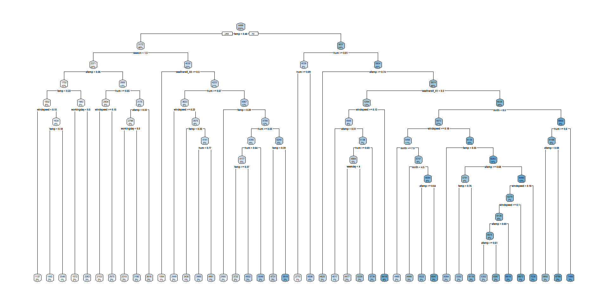
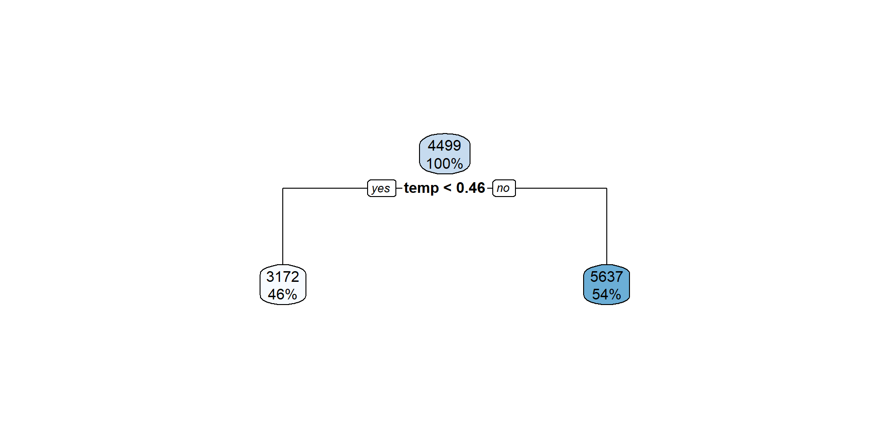
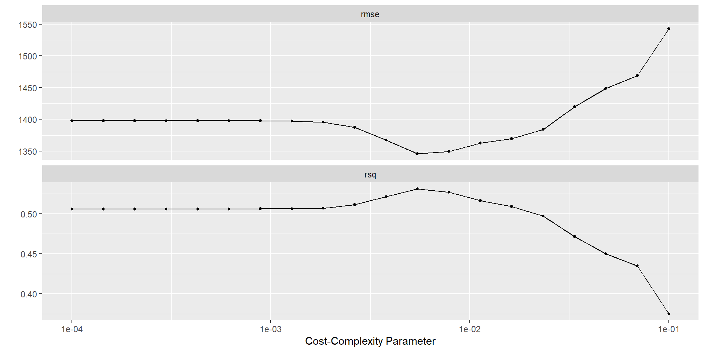
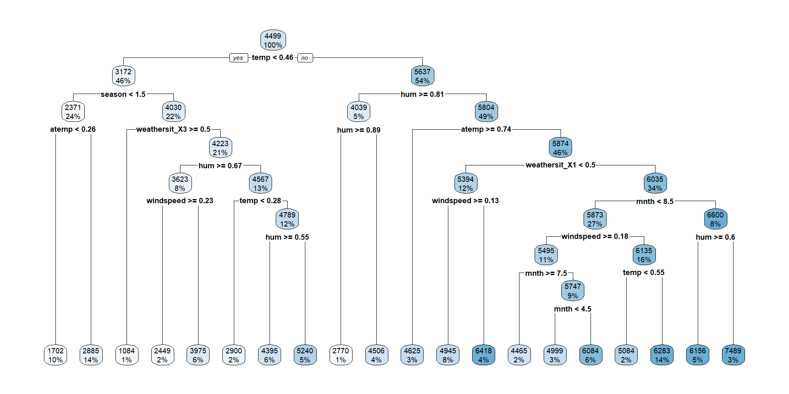

library(tidyverse)
library(tidymodels)
library(dsbox) # dcbikeshare data
library(knitr)
tidymodels_prefer()
set.seed(427)MATH 427: Decision Trees Continued
Announcements
- Job Application Discussion
- Job Interviews
- Admissions Data Project
Job Application Discussion
- We missed the mark a bit.
- Resumes and CVs were good. Sample analysis were… not.
- Biggest issue: professionalism and editing.
- If the majority of your analysis was code, you probably got a bad grade.
- Next time:
- Explain everything that you are doing and justify it!
- Proofread your document!
- Make it look nice!
Job Application Discussion
- Some common themes:
- Y’all love the word “hone”
- Y’all love the phrase “actionable insights”… so do I… but still
- I think some of you are overselling yourselves
- In cover letter, use fewer “buzz-words” and include more substance
Job Interviews
- Link to Resources
- Two Rounds
- First: Screening interview with Dani (Schedule by Wednesday)
- Due next Friday, April 11th
- Second: Technical interview with me (Due last day of class)
- Note that we’ll be doing a lot of stuff between now and then so try to get this done sooner rather than later
- First: Screening interview with Dani (Schedule by Wednesday)
Project
- Project Instructions
- Brian Bava visiting on Friday to discuss
- DO ASAP: Log-in to Canvas and sign data agreement
- Do by Wednesday: Load the data and review instructions. We will have a discussion about cleaning the data on Wednesday. You are all expected to contribute.
- Do by Friday: Explore the data. You team is expected to bring at least three substantial questions for Brian.
Computational Set-Up
Last Time
- Regression Trees in R
- Warm-up question: What is cost complexity tuning?
Regression Trees in R
Cleaning the Data
dcbikeshare_clean <- dcbikeshare |>
select(-instant, -dteday, -casual, -registered, -yr) |>
mutate(
season = as_factor(case_when(
season == 1 ~ "winter",
season == 2 ~ "spring",
season == 3 ~ "summer",
season == 4 ~ "fall"
)),
mnth = as_factor(mnth),
weekday = as_factor(weekday),
weathersit = as_factor(weathersit)
)Split the Data
set.seed(427)
bike_split <- initial_split(dcbikeshare_clean, prop = 0.7, strata = cnt)
bike_train <- training(bike_split)
bike_test <- testing(bike_split)Recipe
bike_recipe <- recipe(cnt ~ ., data = bike_train) |> # set up recipe
step_integer(season, mnth, weekday) |> # numeric conversion of levels of the predictors
step_dummy(all_nominal(), one_hot = TRUE) # one-hot/dummy encode nominal categorical predictorsDefine Model Workflow
dec_tree_lowcc <- decision_tree(cost_complexity = 10^(-4)) |>
set_engine("rpart") |>
set_mode("regression")
dec_tree_highcc <- decision_tree(cost_complexity = 0.1) |>
set_engine("rpart") |>
set_mode("regression")Visualize
library(rpart.plot)
workflow() |>
add_recipe(bike_recipe) |>
add_model(dec_tree_lowcc) |>
fit(bike_train) |>
extract_fit_engine() |>
rpart.plot()Visualize

Visualize
library(rpart.plot)
workflow() |>
add_recipe(bike_recipe) |>
add_model(dec_tree_highcc) |>
fit(bike_train) |>
extract_fit_engine() |>
rpart.plot()Visualize

Defin Model Workflow with Tuning
dec_tree <- decision_tree(cost_complexity = tune()) |>
set_engine("rpart") |>
set_mode("regression")
dt_wf <- workflow() |>
add_recipe(bike_recipe) |>
add_model(dec_tree)Define Folds and Tuning Grid
bike_folds <- vfold_cv(bike_train, v = 5, repeats = 10)
cp_grid <- grid_regular(cost_complexity(range = c(-4, -1)), # I had to play around with these
levels = 20)Tuning CP
tuning_cp_results <- tune_grid(
dt_wf,
resamples= bike_folds,
grid = cp_grid
)Plot Results
autoplot(tuning_cp_results)
Select Best Trees
best_tree <- select_best(tuning_cp_results)
best_tree |> kable()| cost_complexity | .config |
|---|---|
| 0.0054556 | Preprocessor1_Model12 |
ose_tree <- select_by_one_std_err(tuning_cp_results, desc(cost_complexity))
ose_tree |> kable()| cost_complexity | .config |
|---|---|
| 0.0078476 | Preprocessor1_Model13 |
Fit Best Tree
best_tree <- select_best(tuning_cp_results)
best_wf <- finalize_workflow(dt_wf, best_tree)
best_model <- best_wf |> fit(bike_train)
best_model |>
extract_fit_engine() |>
rpart.plot()
Fit OSE Tree
ose_tree <- select_best(tuning_cp_results)
ose_wf <- finalize_workflow(dt_wf, ose_tree)
ose_model <- ose_wf |> fit(bike_train)
ose_model |>
extract_fit_engine() |>
rpart.plot()
Questions
- Why are both models the same but have different RMSE estimates from CV?
- What’s the difference between encoding
mnthas an ordinal variable vs. a one-hot encoding?
Decision Trees
- Advantages
- Easy to explain and interpret
- Closely mirror human decision-making
- Can be displayed graphically, and are easily interpreted by non-experts
- Does not require standardization of predictors
- Can handle missing data directly
- Can easily capture non-linear patterns
- Disadvantages
- Do not have same level of prediction accuracy
- Not very robust
Classification Trees
- Predictions:
- Classes: most common class at terminal node
- Probability: proportion of each class at terminal node
- Rest of tree: same as regression tree
Exploring Decision Trees w/ App
- Dr. F will split you into four groups
- On one of your computers connect to a tv and open this app
- Do the following based on your group number:
- 1: Choose plane on the first screen
- 2: Choose circle on the first screen
- 3: Choose parabola on the first screen
- 4: Choose sine curve on the first screen
- We will generate data from this population… do you think KNN, logistic regression, or a decision tree will yield a better classifier? Why?
Exploring Decision Trees w/ App
- Choose one of the populations
- Generate some data
- Fit a decision tree to the data and see how the different hyper parameters impact the resulting model:
- complexity parameter (cp): the larger the number the more pruning
- Minimum leaf size: the minimum number of observations from the training data that must be contained in a leaf
- Max depth: the maximum number of splits before a terminal node
- Write down any interesting observations
Data: Voter Frequency
voter_data <- read_csv('https://raw.githubusercontent.com/fivethirtyeight/data/master/non-voters/nonvoters_data.csv')
glimpse(voter_data)Rows: 5,836
Columns: 119
$ RespId <dbl> 470001, 470002, 470003, 470007, 480008, 480009, 480010,…
$ weight <dbl> 0.7516, 1.0267, 1.0844, 0.6817, 0.9910, 1.0591, 1.1512,…
$ Q1 <dbl> 1, 1, 1, 1, 1, 1, 1, 1, 1, 1, 1, 1, 1, 1, 1, 1, 1, 1, 1…
$ Q2_1 <dbl> 1, 1, 1, 1, 1, 3, 1, 1, 1, 1, 1, 1, 3, 1, 1, 1, 1, 1, 1…
$ Q2_2 <dbl> 1, 2, 1, 1, 1, 2, 1, 1, 1, 1, 2, 1, 4, 1, 1, 1, 1, 1, 1…
$ Q2_3 <dbl> 2, 2, 2, 1, -1, 3, 2, 2, 1, 2, 2, 1, 2, 3, 1, 1, 1, 1, …
$ Q2_4 <dbl> 4, 3, 2, 3, 1, 4, 3, 2, 3, 1, 2, 4, 2, 3, 1, 1, 1, 1, 2…
$ Q2_5 <dbl> 1, 1, 1, 1, 1, 1, 1, 1, 1, 1, 2, 1, 4, 1, 1, 1, 1, 1, 1…
$ Q2_6 <dbl> 4, 1, 1, 1, 1, 3, 1, 3, 1, 1, 2, 4, 2, 1, 1, 1, 1, 1, 2…
$ Q2_7 <dbl> 2, 2, 2, 1, 1, 3, 1, 1, 1, 1, 2, 2, 1, 1, 1, 1, 1, 1, 1…
$ Q2_8 <dbl> 2, 1, 1, 1, 1, 1, 1, 1, 1, 2, 2, 3, 2, 1, 1, 1, 1, 2, 1…
$ Q2_9 <dbl> 4, 1, 4, 1, 1, 1, 1, 4, 3, 1, 3, 4, 4, 4, 1, 1, 2, 1, 3…
$ Q2_10 <dbl> 2, 3, 3, 2, 1, 4, 3, 2, 2, 2, 3, 2, 2, 3, 4, 2, 1, 1, 1…
$ Q3_1 <dbl> 1, 3, 2, 1, 4, 1, 2, 2, 1, 3, 3, 1, 4, 1, 3, 3, 4, 4, 3…
$ Q3_2 <dbl> 1, 3, 2, 1, -1, 2, 3, 3, 4, 3, 3, 1, 4, 1, 4, 4, 2, 4, …
$ Q3_3 <dbl> 4, 4, 3, 4, 1, -1, 3, 3, 2, 3, 2, 4, 1, 4, 4, 4, 4, 1, …
$ Q3_4 <dbl> 4, 3, 3, 4, 1, 2, 2, 1, 1, 2, 2, 4, 1, 1, 1, 1, 4, 1, 2…
$ Q3_5 <dbl> 3, 3, 2, 2, 2, 2, 2, 1, 2, 3, 2, 3, 1, 1, 2, 2, 3, 3, 2…
$ Q3_6 <dbl> 2, 2, 2, 1, 4, 2, 2, 2, 1, 2, 3, 1, 4, 1, 1, 2, 4, 3, 2…
$ Q4_1 <dbl> 2, 2, 2, 1, 1, 4, 2, 1, 2, 2, 2, 2, 1, 2, 2, 1, 1, 1, 2…
$ Q4_2 <dbl> 1, 2, 2, 2, 1, 3, 1, 1, 2, 3, 2, 1, 1, 2, 2, 1, 1, 1, 1…
$ Q4_3 <dbl> 2, 2, 3, 2, 1, 3, 1, 2, 2, 3, 3, 1, 1, 2, 2, 1, 1, 1, 1…
$ Q4_4 <dbl> 2, 3, 3, 2, 1, 3, 2, 2, 4, 3, 3, 2, 3, 4, 4, 2, 1, 1, 2…
$ Q4_5 <dbl> 2, 3, 2, 2, 1, 4, 1, 2, 3, 2, 3, 1, 2, 2, 2, 1, 1, 2, 3…
$ Q4_6 <dbl> 2, 1, 3, 2, 1, 2, 1, 3, 3, 3, 3, 2, 4, 2, 1, 2, 1, 1, 3…
$ Q5 <dbl> 1, 1, 1, 1, 1, 2, 1, 1, 1, 1, 1, 1, 1, 2, 1, 1, 1, 1, 1…
$ Q6 <dbl> 2, 2, 1, 3, 2, 4, 1, 1, 3, 3, 3, 2, 4, 4, 3, 1, 2, 3, 2…
$ Q7 <dbl> 1, 2, 1, 1, 2, 1, 1, 1, 1, 1, 1, 1, 1, 1, 1, 1, 1, 2, 1…
$ Q8_1 <dbl> 3, 2, 3, 3, 1, 3, 2, 4, 3, 2, 2, 4, 1, 4, 1, 1, 4, 1, 3…
$ Q8_2 <dbl> 4, 3, 2, 2, 3, 3, -1, 4, 4, 3, 2, 3, 4, 4, 3, 4, 2, 3, …
$ Q8_3 <dbl> 2, 2, 1, 2, 2, 3, 2, 1, 3, 2, 2, 2, 1, 4, 2, 2, 2, 3, 2…
$ Q8_4 <dbl> 1, 2, 1, 2, 3, 2, 1, 1, 2, 2, 2, 3, 3, 2, 2, 2, 1, 2, 1…
$ Q8_5 <dbl> 1, 2, 2, 2, 3, 3, 1, 2, 2, 2, 2, 2, 4, 4, 2, 2, 1, 2, 2…
$ Q8_6 <dbl> 1, 2, 2, 2, 3, 3, 1, 2, 2, 2, 2, 2, 3, 2, 2, 3, 2, 2, 2…
$ Q8_7 <dbl> 1, 3, 2, 2, 4, 2, 2, 4, 4, 2, 3, 1, 4, 4, 4, 4, 1, 4, 4…
$ Q8_8 <dbl> 2, 2, 2, 2, 2, 2, 1, 1, 2, 1, 2, 3, 2, 2, 1, 1, 1, 1, 2…
$ Q8_9 <dbl> 4, 2, 1, 2, 2, 2, 2, 1, 2, 2, 3, 2, 3, 2, 1, 1, 1, 2, 1…
$ Q9_1 <dbl> 2, 1, 1, 1, 1, -1, 1, 1, 1, 2, 1, 2, 2, 3, 1, 1, 1, 1, …
$ Q9_2 <dbl> 2, 1, 2, 2, 4, -1, 2, 2, 4, 2, 2, 2, 3, 3, 4, 4, 4, 4, …
$ Q9_3 <dbl> 4, 3, 4, 4, 3, -1, 2, 3, 4, 3, 3, 4, 2, 3, 3, 3, 4, 4, …
$ Q9_4 <dbl> 4, 4, 4, 4, 4, 4, 3, 4, 4, 3, 4, 4, 4, 3, 4, 4, 4, 4, 4…
$ Q10_1 <dbl> 2, 2, 2, 2, 2, 2, 2, 2, 2, 2, 2, 2, 2, 2, 2, 2, 2, 2, 2…
$ Q10_2 <dbl> 2, 2, 2, 2, 2, 2, 1, 2, 1, 1, 2, 2, 2, 2, 2, 2, 2, 2, 2…
$ Q10_3 <dbl> 2, 2, 1, 2, 2, 2, 2, 2, 1, 2, 2, 2, 2, 2, 2, 1, 2, 2, 2…
$ Q10_4 <dbl> 2, 2, 2, 2, 2, 2, 2, 2, 2, 2, 2, 2, 2, 2, 2, 2, 2, 2, 2…
$ Q11_1 <dbl> 2, 2, 2, 1, 2, 2, 2, 2, 2, 2, 2, 1, 2, 2, 2, 2, 2, 2, 2…
$ Q11_2 <dbl> 2, 2, 2, 2, 2, 2, 2, 2, 2, 2, 2, 2, 2, 2, 2, 2, 2, 2, 2…
$ Q11_3 <dbl> 2, 1, 1, 2, 1, 2, 2, 2, 2, 1, 1, 2, 2, 2, 2, 2, 1, 2, 2…
$ Q11_4 <dbl> 2, 2, 2, 2, 2, 1, 2, 2, 2, 2, 2, 2, 2, 2, 2, 2, 1, 2, 2…
$ Q11_5 <dbl> 2, 2, 1, 1, 2, 2, 2, 2, 2, 2, 2, 2, 1, 2, 1, 2, 2, 2, 2…
$ Q11_6 <dbl> 2, 2, 2, 2, 2, 2, 2, 2, 2, 2, 2, 2, 2, 2, 2, 2, 2, 2, 2…
$ Q14 <dbl> 5, 1, 5, 5, 1, -1, 1, 5, 2, 1, 1, 5, 1, 2, 1, 1, 2, 1, …
$ Q15 <dbl> 1, 1, 2, 1, 5, -1, 3, 1, 4, 5, 1, 2, 5, 2, 3, 5, 1, 4, …
$ Q16 <dbl> 1, 2, 1, 4, 1, -1, 3, 1, 1, 3, 1, 2, 1, 1, 1, 1, 1, 1, …
$ Q17_1 <dbl> 1, 2, 1, 1, 2, -1, 3, 1, 2, 2, 2, 2, 2, 3, 1, 1, 1, 1, …
$ Q17_2 <dbl> 1, 2, 3, 1, 2, -1, 2, 1, 1, 1, 2, 1, 4, 3, 1, 1, 1, 1, …
$ Q17_3 <dbl> 1, 2, 1, 1, 4, -1, 4, 1, 2, 1, 3, 1, 4, 3, 2, 3, 1, 4, …
$ Q17_4 <dbl> 3, 3, 1, 1, 4, -1, 2, 2, 4, 2, 2, 3, 2, 2, 4, 4, 1, 4, …
$ Q18_1 <dbl> 2, 2, 2, 2, 2, 2, 2, 2, 2, 2, 2, 1, 2, 2, 2, 2, 2, 2, 2…
$ Q18_2 <dbl> 2, 2, 2, 2, 2, 2, 2, 2, 2, 2, 2, 2, 2, 2, 2, 2, 2, 2, 2…
$ Q18_3 <dbl> 2, 2, 2, 2, 2, 2, 2, 2, 2, 2, 2, 2, 2, 2, 2, 2, 2, 2, 2…
$ Q18_4 <dbl> 2, 2, 2, 2, 2, 2, 2, 2, 2, 2, 2, 2, 2, 2, 2, 2, 2, 2, 2…
$ Q18_5 <dbl> 2, 2, 2, 2, 2, 2, 2, 2, 2, 2, 2, 2, 2, 2, 2, 2, 2, 2, 2…
$ Q18_6 <dbl> 2, 2, 2, 2, 2, 2, 2, 2, 2, 2, 2, 2, 2, 2, 2, 2, 2, 2, 2…
$ Q18_7 <dbl> 2, 2, 1, 2, 2, 2, 2, 2, 2, 2, 2, 2, 2, 2, 2, 2, 2, 2, 2…
$ Q18_8 <dbl> 2, 2, 2, 2, 2, 2, 2, 2, 2, 2, 2, 1, 2, 2, 2, 2, 2, 1, 2…
$ Q18_9 <dbl> 2, 2, 2, 2, 2, 2, 2, 2, 2, 2, 2, 1, 2, 2, 2, 2, 2, 2, 2…
$ Q18_10 <dbl> 2, 2, 2, 2, 2, 2, 2, 2, 2, 2, 2, 2, 2, 2, 2, 2, 2, 2, 2…
$ Q19_1 <dbl> -1, -1, -1, -1, -1, -1, 1, -1, 1, 1, 1, -1, -1, -1, 1, …
$ Q19_2 <dbl> -1, 1, 1, -1, -1, -1, -1, 1, 1, -1, 1, -1, -1, -1, 1, 1…
$ Q19_3 <dbl> 1, -1, -1, 1, -1, -1, -1, -1, 1, -1, 1, 1, 1, -1, 1, -1…
$ Q19_4 <dbl> 1, -1, 1, -1, -1, -1, -1, 1, 1, -1, 1, 1, -1, -1, -1, -…
$ Q19_5 <dbl> 1, -1, -1, -1, -1, -1, -1, 1, 1, 1, 1, 1, -1, -1, -1, -…
$ Q19_6 <dbl> 1, -1, -1, -1, -1, -1, -1, -1, 1, 1, 1, 1, -1, -1, 1, -…
$ Q19_7 <dbl> 1, -1, -1, -1, -1, -1, -1, 1, 1, -1, 1, 1, 1, -1, -1, -…
$ Q19_8 <dbl> -1, -1, 1, 1, -1, -1, -1, -1, 1, -1, 1, -1, 1, -1, -1, …
$ Q19_9 <dbl> -1, -1, 1, -1, -1, -1, -1, 1, 1, -1, 1, -1, 1, -1, -1, …
$ Q19_10 <dbl> -1, -1, -1, 1, -1, -1, -1, -1, -1, -1, -1, -1, -1, 1, -…
$ Q20 <dbl> 1, 1, 1, 1, 1, 2, 1, 1, 1, 1, 1, 1, 2, 1, 1, 1, 1, 1, 1…
$ Q21 <dbl> 1, 1, 1, 1, 1, 2, 1, 1, 1, 2, 1, 1, 2, 1, 3, 1, 1, 1, 1…
$ Q22 <dbl> NA, NA, NA, NA, NA, 7, NA, NA, NA, NA, NA, NA, 6, NA, N…
$ Q23 <dbl> 2, 1, 2, 2, 1, -1, 1, 2, 1, 1, 1, 2, 1, 3, 1, 1, 2, 1, …
$ Q24 <dbl> 1, 3, 1, 1, 3, 4, 1, 1, 3, 1, 3, 3, 3, 1, 3, 3, 1, 3, 1…
$ Q25 <dbl> 1, 3, 2, 2, 1, 3, 1, 2, 1, 2, 3, 1, 2, 4, 1, 1, 1, 1, 1…
$ Q26 <dbl> 1, 1, 1, 1, 1, 4, 1, 1, 1, 1, 1, 1, 4, 1, 1, 1, 1, 1, 1…
$ Q27_1 <dbl> 1, 1, 1, 1, 1, 2, 1, 1, 1, 1, 2, 1, 2, 1, 1, 1, 1, 1, 1…
$ Q27_2 <dbl> 1, 1, 1, 1, 1, 2, 1, 1, 1, 1, 1, 1, 2, 1, 1, 1, 1, 1, 1…
$ Q27_3 <dbl> 1, 1, 1, 1, 1, 2, 1, 1, 1, 1, 2, 1, 2, 1, 1, 1, 1, 1, 1…
$ Q27_4 <dbl> 1, 1, 1, 1, 1, 2, 1, 1, 1, 1, 1, 1, 2, 1, 1, 1, 1, 1, 1…
$ Q27_5 <dbl> 1, 1, 1, 1, 1, 2, 1, 1, 1, 1, 2, 1, 2, 1, 1, 1, 1, 1, 1…
$ Q27_6 <dbl> 1, 1, 1, 1, 1, 2, 1, 1, 1, 1, 1, 1, 2, 1, 1, 1, 1, 1, 1…
$ Q28_1 <dbl> 1, 1, 1, 1, 1, NA, 1, 1, 1, 1, 1, 1, NA, -1, 1, -1, 1, …
$ Q28_2 <dbl> 1, -1, -1, 1, 1, NA, -1, -1, -1, 1, -1, 1, NA, -1, 1, -…
$ Q28_3 <dbl> 1, -1, -1, -1, 1, NA, 1, -1, 1, -1, -1, -1, NA, -1, 1, …
$ Q28_4 <dbl> 1, -1, -1, 1, -1, NA, 1, -1, -1, -1, 1, 1, NA, -1, 1, -…
$ Q28_5 <dbl> -1, -1, -1, -1, 1, NA, 1, -1, -1, -1, -1, 1, NA, -1, -1…
$ Q28_6 <dbl> -1, 1, -1, -1, -1, NA, -1, 1, -1, -1, -1, 1, NA, -1, 1,…
$ Q28_7 <dbl> 1, -1, 1, -1, 1, NA, -1, -1, 1, 1, -1, -1, NA, -1, 1, -…
$ Q28_8 <dbl> -1, -1, -1, -1, -1, NA, -1, -1, -1, -1, -1, -1, NA, 1, …
$ Q29_1 <dbl> NA, NA, NA, NA, NA, -1, NA, NA, NA, NA, NA, NA, -1, NA,…
$ Q29_2 <dbl> NA, NA, NA, NA, NA, -1, NA, NA, NA, NA, NA, NA, 1, NA, …
$ Q29_3 <dbl> NA, NA, NA, NA, NA, -1, NA, NA, NA, NA, NA, NA, -1, NA,…
$ Q29_4 <dbl> NA, NA, NA, NA, NA, -1, NA, NA, NA, NA, NA, NA, -1, NA,…
$ Q29_5 <dbl> NA, NA, NA, NA, NA, -1, NA, NA, NA, NA, NA, NA, -1, NA,…
$ Q29_6 <dbl> NA, NA, NA, NA, NA, -1, NA, NA, NA, NA, NA, NA, -1, NA,…
$ Q29_7 <dbl> NA, NA, NA, NA, NA, -1, NA, NA, NA, NA, NA, NA, -1, NA,…
$ Q29_8 <dbl> NA, NA, NA, NA, NA, -1, NA, NA, NA, NA, NA, NA, -1, NA,…
$ Q29_9 <dbl> NA, NA, NA, NA, NA, 1, NA, NA, NA, NA, NA, NA, -1, NA, …
$ Q29_10 <dbl> NA, NA, NA, NA, NA, -1, NA, NA, NA, NA, NA, NA, -1, NA,…
$ Q30 <dbl> 2, 3, 2, 2, 1, 5, 1, 2, 1, 3, 1, 2, 1, 5, 1, 1, 2, 1, 5…
$ Q31 <dbl> NA, NA, NA, NA, -1, NA, 1, NA, 1, NA, 1, NA, 2, NA, 1, …
$ Q32 <dbl> 1, NA, 2, 1, NA, NA, NA, 1, NA, NA, NA, 1, NA, NA, NA, …
$ Q33 <dbl> NA, 1, NA, NA, NA, -1, NA, NA, NA, 1, NA, NA, NA, 1, NA…
$ ppage <dbl> 73, 90, 53, 58, 81, 61, 80, 68, 70, 83, 43, 42, 48, 52,…
$ educ <chr> "College", "College", "College", "Some college", "High …
$ race <chr> "White", "White", "White", "Black", "White", "White", "…
$ gender <chr> "Female", "Female", "Male", "Female", "Male", "Female",…
$ income_cat <chr> "$75-125k", "$125k or more", "$125k or more", "$40-75k"…
$ voter_category <chr> "always", "always", "sporadic", "sporadic", "always", "…Cleaning Data: Missing Data
voter_data |>
summarize(across(everything(), ~sum(is.na(.x)))) |>
pivot_longer(everything()) |>
filter(value > 0)# A tibble: 22 × 2
name value
<chr> <int>
1 Q22 5350
2 Q28_1 534
3 Q28_2 534
4 Q28_3 534
5 Q28_4 534
6 Q28_5 534
7 Q28_6 534
8 Q28_7 534
9 Q28_8 534
10 Q29_1 4494
# ℹ 12 more rowsCleaning the Data: Q28, 29, 31
- What should we do with question 28?
- What should we do with question 29?
- What should we do with question 31?